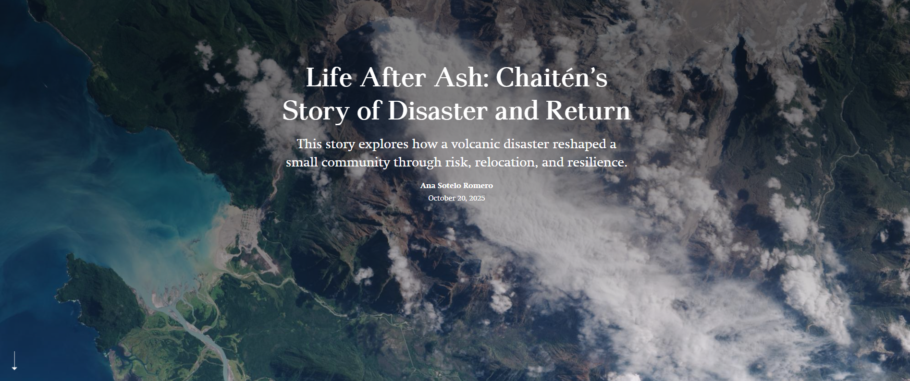

This project looks at what happened to the town of Chaitén in Chile after the 2008 volcanic eruption. The eruption was exceptionally powerful for a rhyolitic system, producing heavy ashfall, river diversion, and lahars that buried large parts of the town and forced a complete evacuation.
My project focuses on how evacuation, government decisions, and community action shaped the town’s long path to recovery. This work emphasizes the relationship between geologic processes, state governance, and the lived experiences of the displaced residents.
This project reflects my broader interest in the human dimensions of geologic hazards. Through this work, I aim to highlight the intersection of volcanic hazards, political decision-making, and community resilience in one of Chile’s most compelling post-disaster landscapes.
This project is presented as an interactive ArcGIS StoryMap, click below to view it!
